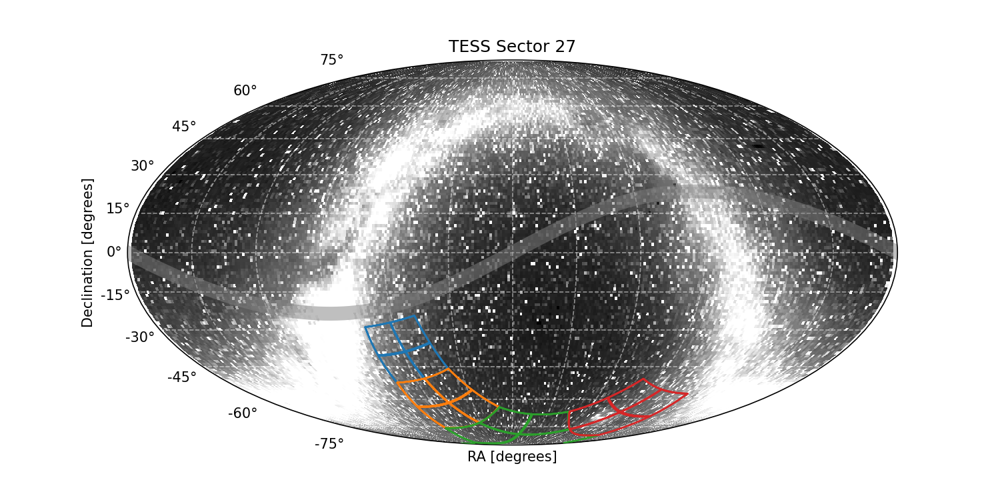

|
 |
×
Warning for Sector 27 (September 2020): This is the first data release for the extended mission. Key changes have occurred including the collection of 10-min FFI data instead of 30-min, and 20-second target pixel files.
- The background correction was updated for the extended mission, with the new method providing improved results for fainter and crowded stars.
- For targets observed in both Year 1 and Year 3, Year 3 processing was done using TIC 8.1 while TIC 7 was used for Year 1 processing; this may result in differences in results for certain targets.
Sector 27 Information
For full data release notes see: DRN38. For a list of TIC IDs with noted issues, see this list.
Updates:
This is the first data release for the extended mission
Sector Summary
Spacecraft Pointing (deg)
| RA | dec | roll | |
|---|---|---|---|
| Spacecraft | 326.85 | -72.43 | 214.51 |
| Camera 1 | 301.6 | -38.68 | 282.66 |
| Camera 2 | 312.45 | -61.74 | 291.17 |
| Camera 3 | 8.6 | -79.81 | 165.21 |
| Camera 4 | 90.01 | -66.56 | 244.53 |
Orbit Summary
| Orbits | Dates (UTC) Start - End |
Cadence # Start - End |
Momentum dumps |
|---|---|---|---|
| 61 | 2020-07-05 - 2020-07-17 | 582349 - 590884 | 1 |
| 62 | 2020-07-18 - 2020-07-30 | 591619 - 599894 | 1 |
Sector Notes
| Noted Issue | Description |
| Spacecraft pointing | Year 3 is a re-observation of the southern ecliptic hemisphere, which will take place over 13 sectors. The pointing strategy is the same as for Year 1, except the locations of Sectors 27–39 are offset in ecliptic longitude with respect to Sectors 1–13. All sectors in Year 3 are planned for a spacecraft pointing of −54 degrees in ecliptic latitude. |
| Scattered light | In Sector 27, the Earth is a significant source of scattered light throughout both orbits. |